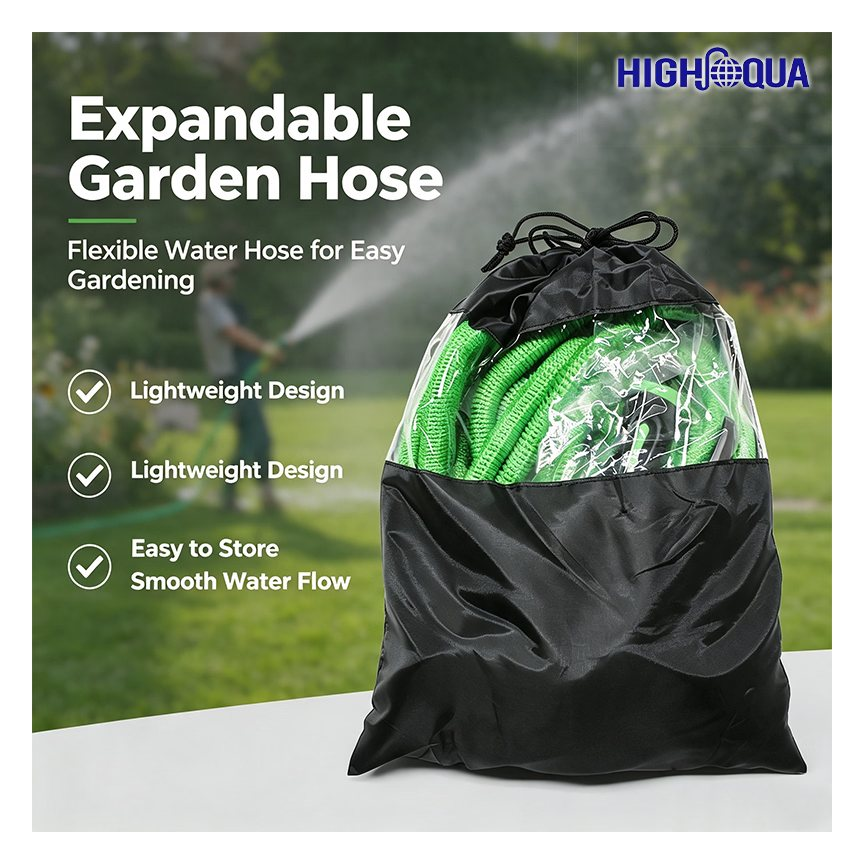
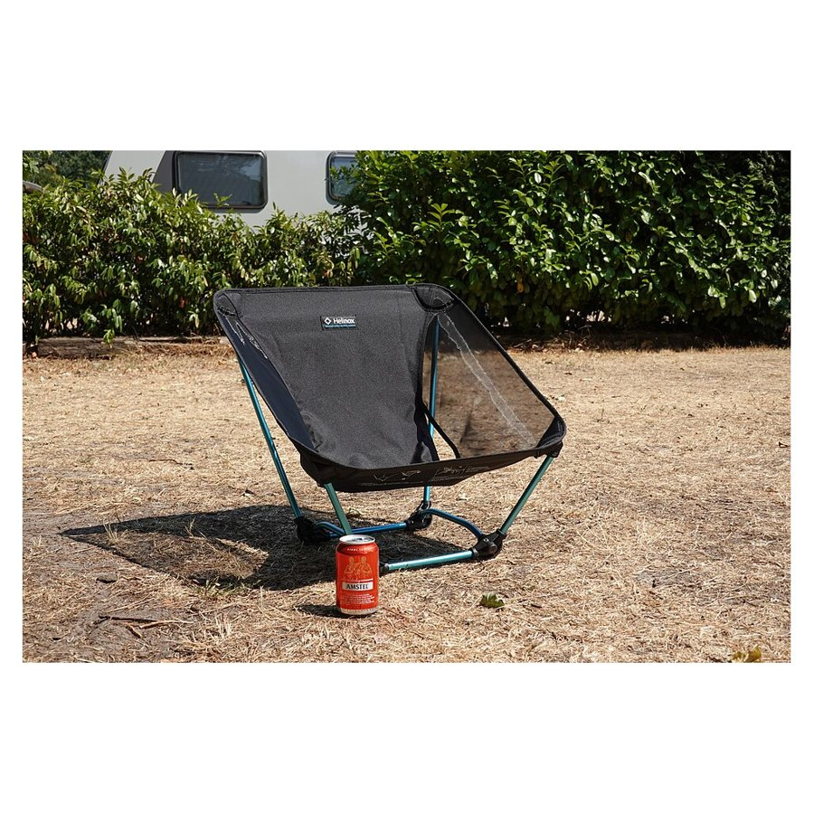
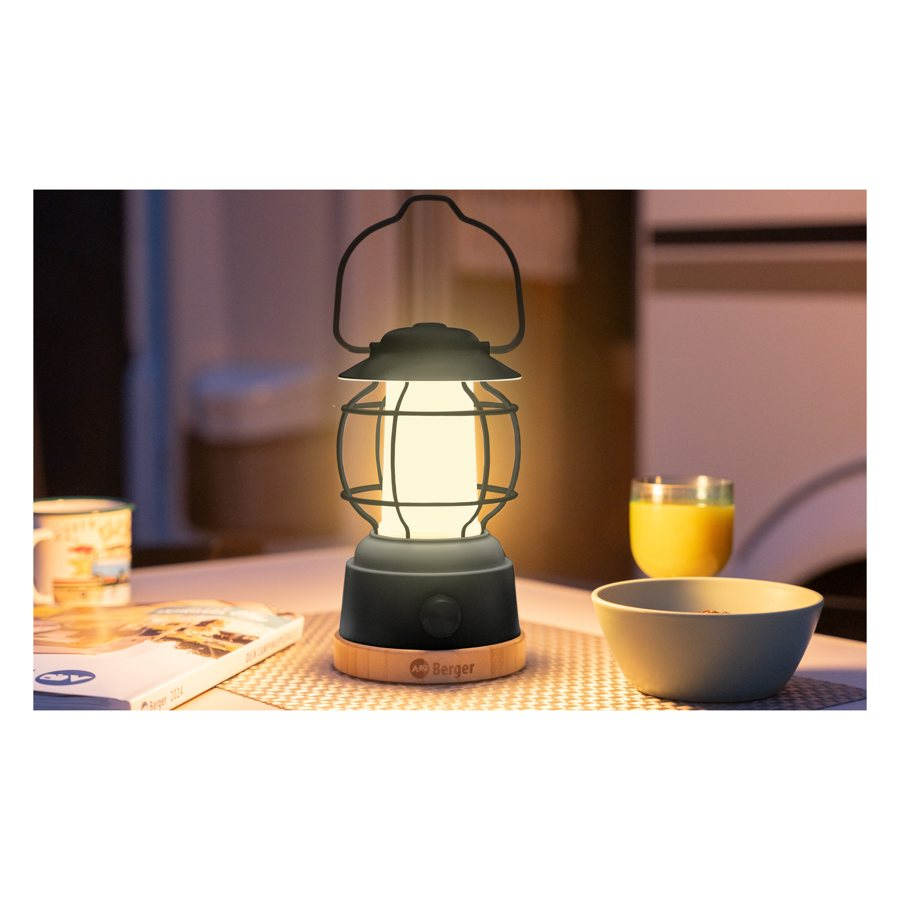
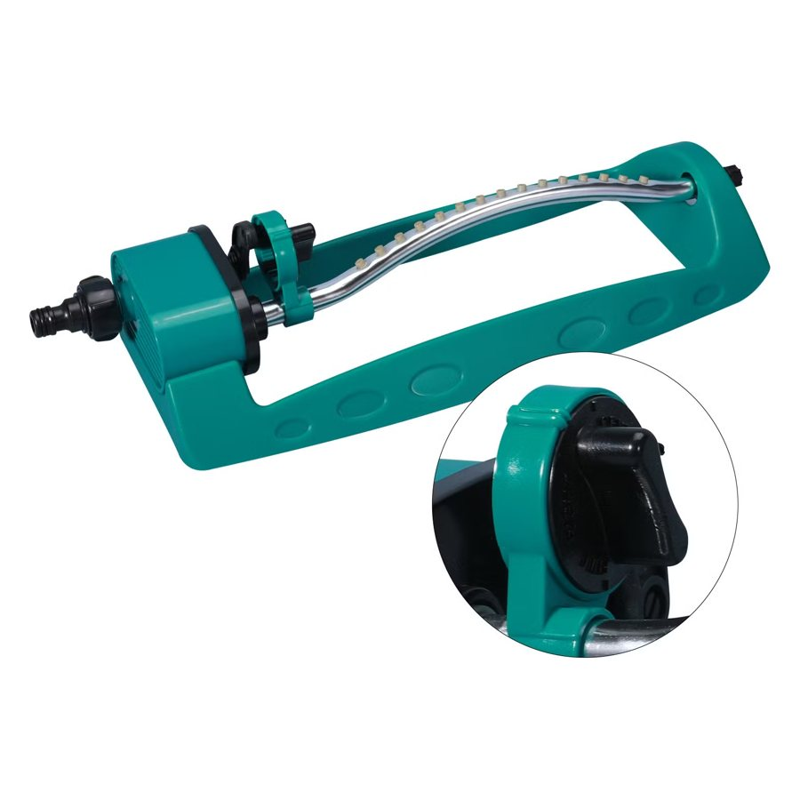
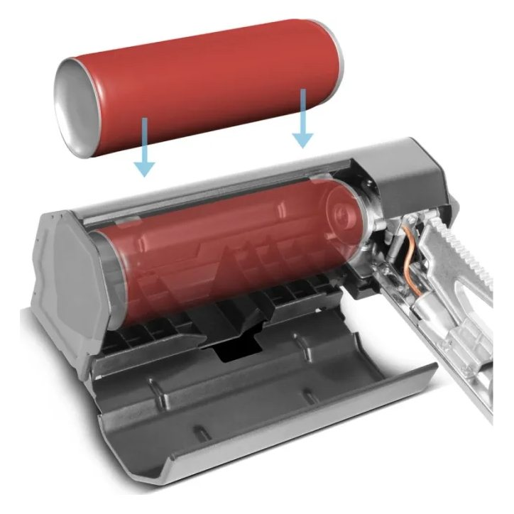
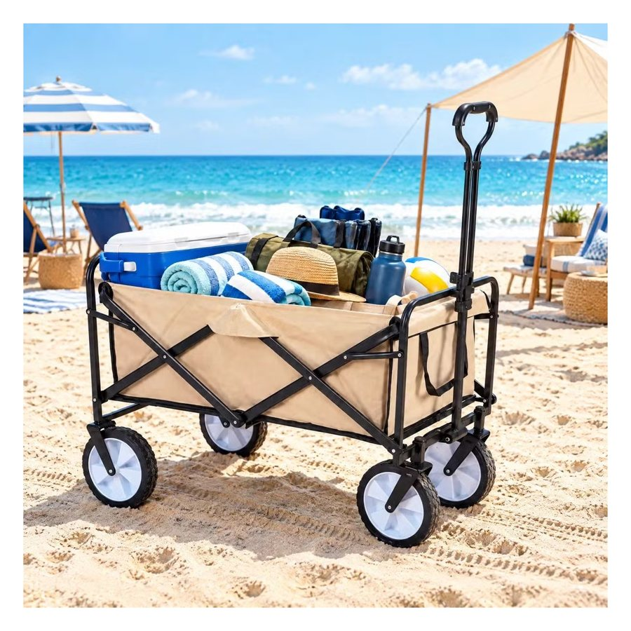
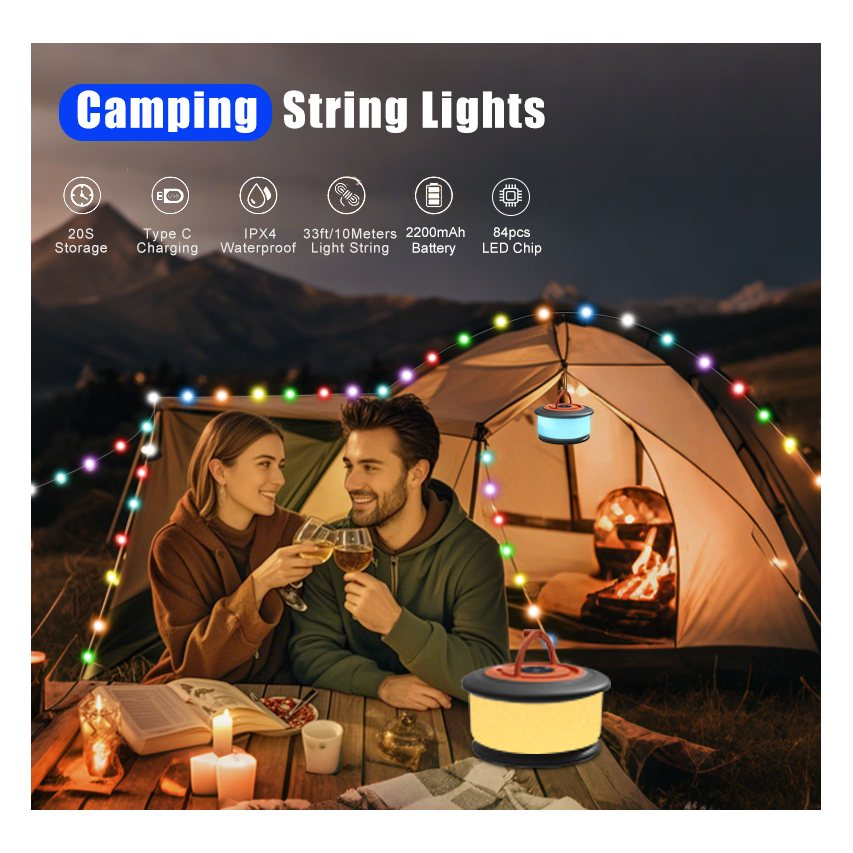

图片仅供参考，展示产品类型。
花园、阳台与露营
不锈钢烧烤工具及配件套装，18 件，铝合金箱装
18 件不锈钢长柄烧烤套装：夹、铲、叉、刀、刷、清洁刷、玉米叉和串针，铝合金箱收纳。
套装把主要烧烤工具集中收纳在带软内衬的铝合金箱中，便于旅行、露营和车库存放。关键在于食品级不锈钢、利落的边缘处理、可远离炭火的长柄，以及锁扣牢固的箱体。
技术参数
| 内容 | 18 件：夹、铲、叉、刀、刷、清洁刷、8 个玉米叉、串针 |
|---|---|
| 工具材质 | 不锈钢；手柄部分带硅胶 |
| 箱体 | 铝合金，带内衬，约 47 × 8 × 22 cm，约 2.5 kg |
| 手柄 | 长柄，远离炭火 |
| 海关编码（HS） | 82159910 |
欧盟标准与法规
(EG) Nr. 1935/2004食品接触材料和制品框架法规LFGB §§ 30/31德国日用品要求（含 BfR 硅胶建议）CM/Res(2013)9欧洲委员会关于食品接触金属及合金的决议（金属析出）(EU) Nr. 10/2011食品接触塑料（适用于塑料手柄 / 部件）(EG) Nr. 2023/2006食品接触材料的良好生产规范（GMP）GPSR (EU) 2023/988通用产品安全：欧盟负责人、标识（刀具、尖锐部件）
搭配产品

本类别其他产品

可伸缩花园水管，15–22.5米，配接头和七功能喷枪纺织外层可伸缩花园水管，通水后伸长至约三倍，断水后自动收缩，附接头和手持喷枪。

太阳能喷泉水泵/太阳能池塘泵 （含太阳能板和喷头套装, 约180升/小时）无电池太阳能直驱套装：太阳能板加无刷潜水泵，适用于鸟浴盆、池塘或装饰喷泉。

折叠露营椅 （钢架、600D牛津布、杯托、侧袋）结实的折叠椅，钢管架、带衬垫牛津布座面和杯托，纸箱仅19 × 19 × 97厘米。

2–3人弹开式帐篷 （自动搭建、玻璃纤维骨架、防水、收纳袋）190T涤纶自动弹开帐篷，配柔性玻璃纤维杆，几秒钟即可搭好，可折叠成扁平状。

圆形框架泳池套装 Ø 366 × 76厘米 （钢架、PVC复合池壁、滤芯过滤泵）圆形地上泳池套装（12英尺 × 30英寸），钢管框架、多层PVC池壁和滤芯过滤泵，无需工具即可安装。

镀锌钢无底高架种植床 （庭院款 240 × 80 × 82 cm, 阳台款 100 × 40 × 77 cm）采用镀锌或铝锌涂层钢板制成的无底种植床模块：耐候防锈，无需专用工具即可组装。

双人露营吊床 （降落伞尼龙, 树带和登山扣, 收纳袋）降落伞尼龙超轻双人吊床，配树带、登山扣和收纳袋：几秒钟即可挂好，收纳体积小。

可充电 LED 露营灯 （USB-C、电池、可调光、可悬挂）复古造型充电 LED 营地灯，USB-C 充电，无级调光，适用于帐篷、露台和庭院桌。

陶土花盆 （素烧）带排水孔的经典素烧陶土花盆。

草坪摇摆式喷灌器可调射程的塑料摇摆草坪喷灌器。

折叠金属小圆桌椅三件套节省空间的钢制阳台套装，一桌两椅。

3米悬臂庭院伞 （铝架）带摇柄、铝架及防紫外线伞面的悬臂伞。

木乃伊式睡袋 （涤纶, 三季）带风帽和收纳袋的轻便木乃伊睡袋。

便携露营燃气炉 （丁烷卡式）使用卡式气罐的单头露营炉，附便携盒。

折叠手拉车/园艺推车适用于花园、海滩和露营的可折叠手拉车。

露营LED灯串10米USB-C充电适用于帐篷、露台和花园的充电灯串。